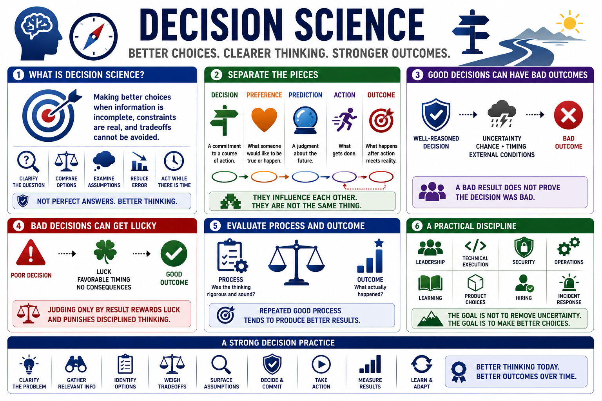

What Is Decision Science?
Connecting to LMS... Progress: in progress

Narration
Decision science is the study and practice of making better choices when information is incomplete, constraints are real, and tradeoffs cannot be avoided. It does not promise perfect answers. It gives people a way to improve the quality of their thinking before action is taken, while there is still time to clarify the question, compare options, examine assumptions, and reduce avoidable error.
A useful starting point is to separate decisions, preferences, predictions, actions, and outcomes. A decision is a commitment to a course of action. A preference is what someone would like to be true or would like to happen. A prediction is a judgment about the future. An action is what gets done. An outcome is what happens after the action meets reality. Those pieces influence each other, but they are not the same thing.
This distinction matters because good decisions can still have bad outcomes. A security team may choose a well-reasoned patch plan, then experience an unrelated outage. A manager may make a sound staffing decision, then lose a key person to an unexpected opportunity. The bad result does not automatically prove the decision process was bad. Uncertainty, chance, timing, and external conditions can all affect outcomes.
The reverse is also true. Bad decisions can sometimes get lucky. A team might skip analysis, ignore risk, and still avoid consequences for a while. If people judge only by the final result, they may reward luck and punish disciplined thinking. Decision science asks us to evaluate the process as well as the outcome, because repeated good process tends to produce better results over time.
The discipline is practical. It applies to leadership, technical execution, security, operations, learning, product choices, hiring, incident response, and personal planning. The goal is not to make uncertainty disappear. The goal is to make choices more explicit, more reviewable, and more likely to survive contact with reality.